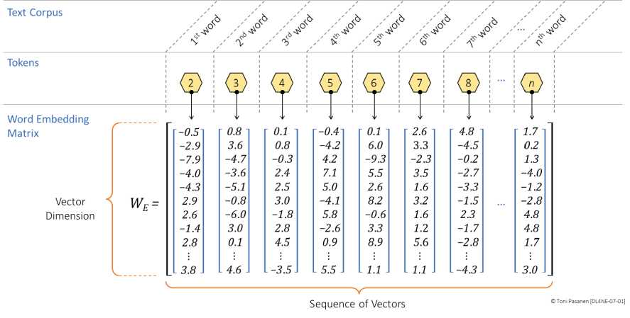
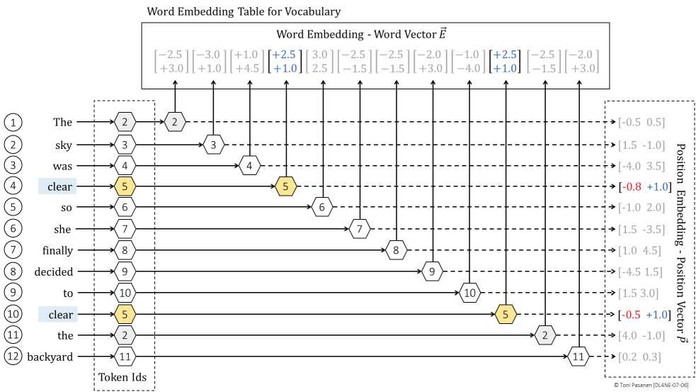

把句子切成 token（如 clear / the / table），查词表得 ID。英文常用 BPE 子词切分，兼顾词表大小与未登录词。网工类比：像把域名变 IP，模型只认数字。
嵌入矩阵（vocab×d_model）把每个 ID 映射为稠密向量，语义相近的词向量相近（如 clear-adj 与 clear-verb 在不同上下文会被后续 Attention 区分）。书 p151-155 演示查表+加权，d_model 越大表达越强，也越吃显存/带宽。
Attention 本身不识顺序，需给每个位置加位置向量（正弦或可学习），最终输入 = 词向量 + 位置向量。没有它，“狗咬人”与“人咬狗”无区别。书 p155-157 算最终嵌入。


举例说明没有位置编码，“A→B→C 拥塞”与“C→B→A”会被混淆。